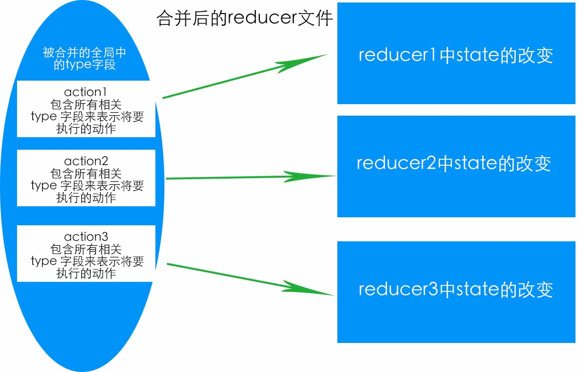

最近一段时间一直在使用react ／ react native结合redux做一些东西，所以总结一下在使用这些东西的时候自己遇到的一些问题
setState是异步的
在react中，setState是非常常见的，有时候想要在setState之后再执行某些操作，可能会这样写：
this.setState({xxState})
if(this.state.xxState){ ... }
当执行时候发现，this.state.xxState并没有被改变，原因在于setState是异步的，而js执行代码的顺序是同步 => 异步 => 回调，所以会先执行if的语句，如果想要在设置完state之后再执行后面的语句，代码如下：
this.setState({xxState},()=>{
if(this.state.xxState){
...
}
})
对redux中action变量命名的理解
在redux中有action，reducer和store，我们在写的时候分别写在三个文件夹中，每个模块对应一个action，reducer，但是最终在运行应用的时候会组和在一起，将所有的action合并成一个文件，通过action去找到对应模块的reducer，从而找到正确的方法。
如果把redux比做一本书的话，action是一本书的目录，而reducer则相当于书的每一章的内容，书的目录是不能重复的，否则会导致在寻找内容的时候出现找到两处对应的内容，这在redux中是不允许的。如下图所示：

所以action中的常量名在整个项目中是不能重复的，否则会在执行当前模块的reducer时候同时执行其他模块的reducer，导致数据的混乱。
##使用react router进行页面传值
首先说明一下，router的跳页方式有两种，一种是直接写Link，另一种是使用hashHistory.push：
import { Router,Route,hashHistory} from 'react-router'
<Link to="/a/b">链接</Link>
//or
clickFun(){
hashHistory.push("/a/b")
}
<div onClick={()=>this.clickFun()}></div>
有时候需要在跳页的时候给下一个页面传递数据，使用react router有三种方式可以实现该需求：
props.params
我们可以给<Route>指定一个path，然后指定通配符可以携带参数到指定的path：
import { Router,Route,hashHistory} from 'react-router'
class App extends React.Component {
render() {
return (
<Router history={hashHistory}>
<Route path='/a/:params' component={UserPage}></Route>
</Router>
)
}
}
//取值
export default class UserPage extends React.Component{
constructor(props){
super(props);
}
render(){
return(<div>this.props.params.name</div>)
}
}
上面的方法可以传递一个或多个值，但是每个值的类型都是字符串，没法传递一个对象,如果传递的话可以将json对象转换为字符串，然后传递过去，传递过去之后再将json字符串转换为对象将数据取出来。
query
使用query可以像get方式一样显示传递数据
let data = {a:3,b:'b',c:36};
let path = {
pathname:'/user',
query:data,
}
<Link to={path}>跳转</Link>
//or
hashHistory.push(path)
//取值
const {a,b,c} = this.props.location.query
state
state传递数据方式类似于post，使用方式与query类似，取值的时候使用this.props.location.state
Object.assign()的使用
在reducer中，使用Object.assign将新的state与默认的state进行合并
const initState = {
ajaxState:false,
orderData: {
current_page: 0,
per_page_count: 0,
total_count:0,
total_page:0,
data_list: [],
}
}
export default (state = initState , action) => {
const {type , ajaxState , orderData = {}} = action;
switch(type){
case ORDERDATA:
return Object.assign({},state,{orderData})
}
}
这里initState相当于一个默认值，拿到新的state时候就将原有的覆盖掉。
但是在做项目时候遇到一个问题，如果传递部分数据（比如orderData只传递传递了current_page和per_page_count），没有传递的希望保持默认，这样使用Object.assign合并会导致合并的结果中未传递的部分直接丢失。
Object.assign在合并对象的时候，可以合并简单对象的元素，但是如果对象中在嵌套对象，则子对象不会合并而会直接覆盖，代码如下：
const obj = {
a:1,
b:2
}
const init = {
name:'',
obj:{
a:'',
b:'',
c:'',
}
}
Object.assign({},init,obj)
/*结果
[object Object] {
obj: [object Object] {
a: 1,
b: 2,
},
name: ""
}
*/
所以，如果要让不传递的数据使用默认值，就需要在reducer开始拿到传递到的数据时候，将没有传递过来的数据加到传过来的数据上，就需要使用两次Object.assign，分别对子对象和对象进行
export default (state = initState , action) => {
const {type , ajaxState , orderData = {}} = action;
//将没有传递过来的数据的默认值加到传过来的state中
const defaultOrderData = Object.assign({},initState.orderData,{orderData})
switch(type){
case ORDERDATA:
return Object.assign({},state,{orderData:defaultOrderData})
}
}
这样就可以实现传递部分数据，不传递的使用默认值
从该例子中可以看出，在reducer中，尽量不要使用嵌套对象，因为每嵌套一层，就需要Object.assign一次
以上就是最近做react项目的一些总结…